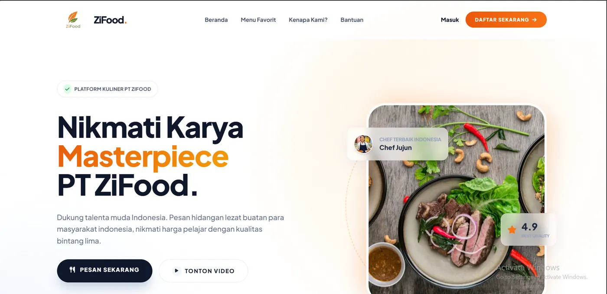

Hai, saya Muhamad Zaidan Faiz.
PENGEMBANG WEB FRONTEND
Menjembatani kesenjangan antara estetika desain dan fungsionalitas dunia nyata. Saya merancang solusi digital yang responsif, intuitif, dan berfokus pada pengalaman pengguna yang lancar.
Berbasis Di
Pasuruan, Jawa Timur
Sekilas Tentang Saya
Merekayasa masa depan dengan desain dan kode.
Saya adalah seorang siswa di SMK Negeri 1 Kota Pasuruan, jurusan Rekayasa Perangkat Lunak (RPL), dengan fokus pada pengembangan web dan pembuatan antarmuka modern yang tangguh, skalabel, serta memiliki desain yang estetis.
Keahlian Teknis
Alat yang saya pakai
hampir setiap hari.
Bukan sekadar daftar, tapi yang benar-benar saya pakai untuk membangun proyek nyata — dari menyusun tampilan sampai menyambungkannya ke basis data.
Geser kubusnya untuk memutar
Karya Pilihan
Produk digital yang dibuat dengan presisi.

ZiFood — Platform Pesanan UMKM
Sebuah platform belanja online responsif yang menyediakan manajemen produk dinamis, keranjang belanja interaktif, dan alur checkout yang mulus untuk meningkatkan konversi penjualan UMKM.
Jurnal PKL — Sistem Laporan Magang
Aplikasi manajemen logbook magang secara real-time yang memfasilitasi komunikasi dan pelaporan antara siswa, guru pembimbing, dan pihak industri dengan sistem autentikasi multi-level.

Punya ide?
Mari kita wujudkan.
Saat ini saya tersedia untuk pekerjaan lepas, kolaborasi proyek, atau sekadar berbagi insight web development. Jika Anda memiliki proyek yang membutuhkan sentuhan kreatif, saya ingin sekali mendengarnya.